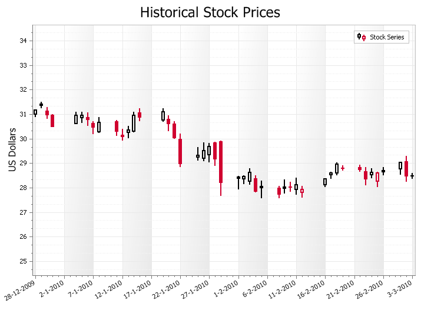

Help >
Codejock ActiveX Controls v15.3 > Xtreme Chart Pro > Objects > ChartCandleStickSeriesStyle Object >
Overview
| Xtreme Chart Pro ActiveX Control v15.3 |
Candle Stick\Financial\Stock chart style.
For a list of all members defined in this module, see ChartCandleStickSeriesStyle members.
A Candlestick Chart used to display trends for financial data, generally stock market prices. Candlestick charts are much easier to rear than a traditional bar chart to a stock market trader. The candle sticks make it fast and easy to compare the high and low, open and close of data. Each "candle stick" represents the high, low, open and close of data for a given value. The relationship between these candles is important in determining trends among stock prices. The "open" and "close" values are displayed as the "body" of the candle, and the "high" and "low" are displayed as simple lined above and below the body. Buying pressure is indicated with hollow candles, where the close is greater than the previous high. Selling pressure is indicated with a filled red candle, where it's close value is lower than the previous close value.

'Candlestick series sample
ChartControl.Content.Titles.DeleteAll
ChartControl.Content.Titles.Add "Historical Stock Prices"
Dim Series As ChartSeries
Set Series = ChartControl.Content.Series.Add("Stock Series")
Series.Points.Add4 "2009-12-28", 30.89, 31.18, 31, 31.17
Series.Points.Add4 "2009-12-29", 31.23, 31.5, 31.35, 31.39
Series.Points.Add4 "2009-12-30", 30.8, 31.29, 31.15, 30.96
Series.Points.Add4 "2009-12-31", 30.48, 30.99, 30.98, 30.48
Series.Points.Add4 "2010-01-04", 30.59, 31.1, 30.62, 30.95
Series.Points.Add4 "2010-01-05", 30.64, 31.1, 30.85, 30.96
Series.Points.Add4 "2010-01-06", 30.52, 31.08, 30.88, 30.77
Series.Points.Add4 "2010-01-07", 30.19, 30.7, 30.63, 30.45
Series.Points.Add4 "2010-01-08", 30.24, 30.88, 30.28, 30.66
Series.Points.Add4 "2010-01-11", 30.12, 30.76, 30.71, 30.27
Series.Points.Add4 "2010-01-12", 29.91, 30.4, 30.15, 30.07
Series.Points.Add4 "2010-01-13", 30.01, 30.52, 30.26, 30.35
Series.Points.Add4 "2010-01-14", 30.26, 31.1, 30.31, 30.96
Series.Points.Add4 "2010-01-15", 30.71, 31.24, 31.08, 30.86
Series.Points.Add4 "2010-01-19", 30.68, 31.24, 30.75, 31.1
Series.Points.Add4 "2010-01-20", 30.31, 30.94, 30.81, 30.59
Series.Points.Add4 "2010-01-21", 30, 30.72, 30.61, 30.01
Series.Points.Add4 "2010-01-22", 28.84, 30.2, 30, 28.96
Series.Points.Add4 "2010-01-25", 29.1, 29.66, 29.24, 29.32
Series.Points.Add4 "2010-01-26", 29.09, 29.85, 29.2, 29.5
Series.Points.Add4 "2010-01-27", 29.02, 29.82, 29.35, 29.67
Series.Points.Add4 "2010-01-28", 28.89, 29.87, 29.84, 29.16
Series.Points.Add4 "2010-01-29", 27.66, 29.92, 29.9, 28.18
Series.Points.Add4 "2010-02-01", 27.92, 28.48, 28.39, 28.41
Series.Points.Add4 "2010-02-02", 28.14, 28.5, 28.37, 28.46
Series.Points.Add4 "2010-02-03", 28.12, 28.79, 28.26, 28.63
Series.Points.Add4 "2010-02-04", 27.81, 28.5, 28.38, 27.84
Series.Points.Add4 "2010-02-05", 27.57, 28.28, 28, 28.02
Series.Points.Add4 "2010-02-08", 27.57, 28.08, 28.01, 27.72
Series.Points.Add4 "2010-02-09", 27.75, 28.34, 27.97, 28.01
Series.Points.Add4 "2010-02-10", 27.84, 28.24, 28.03, 27.99
Series.Points.Add4 "2010-02-11", 27.7, 28.4, 27.93, 28.12
Series.Points.Add4 "2010-02-12", 27.58, 28.06, 27.81, 27.93
Series.Points.Add4 "2010-02-16", 28.02, 28.37, 28.13, 28.35
Series.Points.Add4 "2010-02-17", 28.36, 28.65, 28.53, 28.59
Series.Points.Add4 "2010-02-18", 28.51, 29.03, 28.59, 28.97
Series.Points.Add4 "2010-02-19", 28.69, 28.92, 28.79, 28.77
Series.Points.Add4 "2010-02-22", 28.65, 28.94, 28.84, 28.73
Series.Points.Add4 "2010-02-23", 28.09, 28.83, 28.68, 28.33
Series.Points.Add4 "2010-02-24", 28.38, 28.79, 28.52, 28.63
Series.Points.Add4 "2010-02-25", 28.02, 28.65, 28.27, 28.6
Series.Points.Add4 "2010-02-26", 28.51, 28.85, 28.65, 28.67
Series.Points.Add4 "2010-03-01", 28.53, 29.05, 28.77, 29.02
Series.Points.Add4 "2010-03-02", 28.24, 29.3, 29.08, 28.46
Series.Points.Add4 "2010-03-03", 28.35, 28.61, 28.51, 28.46
Series.ArgumentScaleType = xtpChartScaleDateTime
Dim StyleHL As ChartCandleStickSeriesStyle
Set StyleHL = New ChartCandleStickSeriesStyle
Set ChartControl.Content.Series(0).Style = StyleHL
StyleHL.LineThickness = 2
ChartControl.Content.Series(0).ArgumentScaleType = xtpChartScaleQualitative
Dim Diagram As ChartDiagram2D
Set Diagram = ChartControl.Content.Series(0).Diagram
Diagram.AxisX.Label.Angle = 360 - 30
Diagram.AxisX.Label.Antialiasing = True
Diagram.AxisX.Label.Visible = False
Diagram.AxisY.Title = "US Dollars"
Diagram.AxisY.Title.Visible = True
Diagram.AxisY.Visible = True
Diagram.AxisY.Range.ShowZeroLevel = False
Diagram.AxisY.GridLines.MinorLineStyle.DashStyle = xtpChartDashStyleDashDot
Diagram.AxisY.GridLines.MinorVisible = True